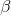
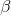

Przydatne linki
Układ okresowy pierwiastków Dany jest prostopadłościan o długościach krawędzi
Dany jest prostopadłościan o długościach krawędzi  ,
, ,
, . Wykaż, że przekątna
. Wykaż, że przekątna  prostopadłościanu jest równa .
prostopadłościanu jest równa .- Wykaż, że objętość czworościany foremnego o krawędzi wynosi .
- Sześcian wpisano w kulę. Wykaż, że stosunek pola powierzchni całkowitej kuli do pola powierzchni całkowitej sześcianu wynosi
 .
. - Przekątna prostopadłościanu nachylona jest do poszczególnych ścian pod kątem
 ,  i
,  i  . Wykaż, że .
. Wykaż, że . -
 Trójkąt równoramienny o długościach ramion obrócono wokół jednego z ramion. Kąt między ramionami ma miarę
Trójkąt równoramienny o długościach ramion obrócono wokół jednego z ramion. Kąt między ramionami ma miarę  . Wykaż, że objętość powstałej bryły wynosi
. Wykaż, że objętość powstałej bryły wynosi  .
. - W ostrosłupie prawidłowym czworokątnym dana jest wysokość
 ostrosłupa oraz kąt , który jest kątem nachylenia krawędzi bocznej do krawędzi podstawy. Wykaż, że objętość tego ostrosłupa wynosi
ostrosłupa oraz kąt , który jest kątem nachylenia krawędzi bocznej do krawędzi podstawy. Wykaż, że objętość tego ostrosłupa wynosi  .
. - Wykaż, że przekątna sześcianu o krawędzi ma długość
 .
. - Wykaż, że objętość ośmiościany foremnego o krawędzi wynosi .
- W sześcian wpisano kulę. Wykaż, że stosunek objętości kuli do objętości sześcianu wynosi
 .
. - Przekątna graniastosłupa prawidłowego czworokątnego tworzy z podstawą kąt , a ze ścianą boczną kąt . Wykaż, że .
- Trójkąt prostokątny o przyprostokątnych i oraz przeciwprostokątnej obrócono wokół przeciwprostokątnej. Wykaż, że objętośc otrzymanej w wyniku obrotu bryły wynosi .
- W graniastosłupie prawidłowym sześciokątnym najdłuższa przekątna graniastosłupa ma długość i tworzy z wysokością kąt . Wykaż, że pole powierzchni całkowitej wynosi .
Zadania powtórzeniowe